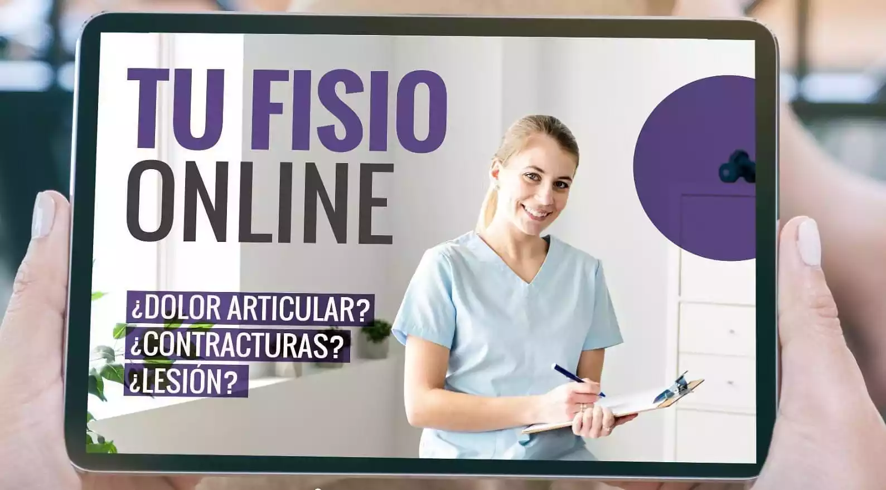
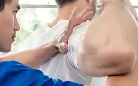
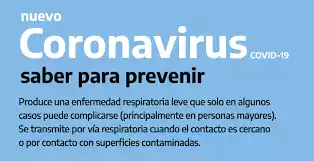

SERVICIOS
ATENCION ONLINE
La Atencion Online tiene la ventaja de poder realizarse en cualquier lugar en que te encuentres. Un profesional Kinesiologo te guiara durante el tratamiento, de forma personalizada, de acuerdo a tu dolencia, con elementos que puedas tener en casa. Se arman rutinas para que puedas hacer en tus tiempos libres, sin salir de casa. Durante la sesion, podes consultar todas tus dudas y lo vamos resolviendo en directo.
ATENCION EN NUESTRO CENTRO
En nuestro centro de atencion, tenemos espacios comodos y seguros, para que puedas realizar tu tratamiento, contamos con equipos de ultima generacion, profesionales especializados y un gimnasio donde podes tratar tu lesion, guiado constantemente durante el proceso. Solicitando un turno, podes venir y recibir atencion personalizada, si sos persona de riesgo te ubicamos en un horario donde no tengas contacto con otros pacientes.
ATENCION DOMICILIARIA

Contamos con profesionales matriculados para tratamientos en domicilios, llevamos los equipos que necesites para tu tratamiento al igual que elementos de gimnasio. Es ideal para pacientes de edad avanzada o niños con problemas respiratorios. Desde la comodidad de tu casa, recibis el mismo tratamiento que en el consultorio.
Noticias
OBRAS SOCIALES
- Subsidio de salud
- OSDE
- Swiss Medical
- Sancor
- Poder Judicial
- OSPE
- Muchas Mas...
NOVEDADES
- - Utiliza mascarilla en público, especialmente en lugares cerrados,
- - Prioriza los espacios abiertos y con buena ventilación,
- - Lávate las manos con frecuencia,
- - Vacúnate cuando sea tu turno,
- - Si no te encuentras bien, quédate en casa!.
 +54 381 586 3890
+54 381 586 3890